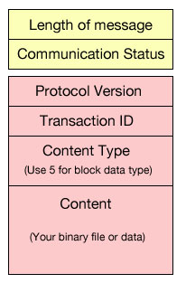
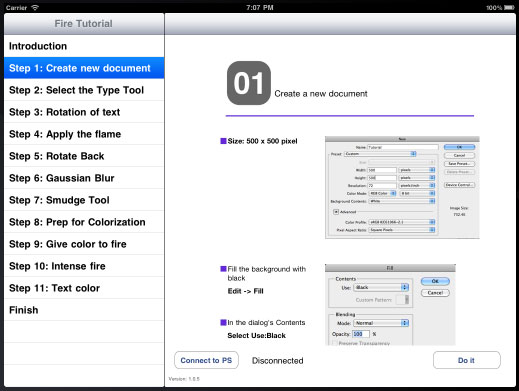

Tutorial Sample
There are two iOS tutorial sample apps in the SDK. One of them is called Tutorial Test and the other one is called Fire Tutorial. Tutorial Test shows how to play back painting and paint brush selection with a special pre-recorded system. The Fire Tutorial shows a real life example of what a Photoshop tutorial would look like. In addition to describing how to use a particular feature, the user can click on the "do it" button to see how it can be done in Photoshop.
Project Location
- Tutorial Test:
samples/ios/tutorialtest - Fire Tutorial:
samples/ios/firetutorial
One thing unique about the tutorial samples is the use of the Arbitrary Data Type. In simple terms, you're sending blob data. Since playback of painting or anything related to brushes requires a special method of recording and playback due to the size of paint strokes recorded, the playback will be in binary. In the tutorials' case, we are sending a pre-recorded binary to Photoshop. When Photoshop returns a URI location to the client, the client asks Photoshop to play that binary file via a special script.
Recording Painting Strokes
To get this "binary" painting playback, do the following:
- Play "recordStoke.jsx".
- Do some painting.
- Play "stopRecording.jsx".
- It will ask you to name the file. This is your binary script file.
To play back painting, you use another script to play the binary script file. This opens up the painting aspects of Photoshop that were previously unavailable. You can now record anything that uses a brush: brush tool, quick selection tool, smudge tool, etc. Anything that uses a brush can be recorded.
recordStroke.jsx
function RecordStroke()
{
var descriptor = new ActionDescriptor();
var commandString = stringIDToTypeID("startStrokeRecording");
executeAction(commandString, descriptor, DialogModes.NO);
}
RecordStroke();
stopRecording.jsx
function StopRecording(fileName)
{
var descriptor = new ActionDescriptor();
var strokeFile = null;
if (fileName != null)
{
strokeFile = File(fileName);
if (!strokeFile.exists)
strokeFile = null;
}
if (strokeFile == null)
{
strokeFile = File.saveDialog("Save recording as...");
$.sleep(250); // makes dialog disappear before continuing
}
if (strokeFile.exists)
strokeFile.remove();
descriptor.putPath(stringIDToTypeID("path"), strokeFile);
var commandString = stringIDToTypeID("stopStrokeRecording");
executeAction(commandString, descriptor, DialogModes.NO);
}
StopRecording();
playbackStroke.jsx
function PlayStroke(fileName)
{
var playFile = null;
if (fileName)
{
playFile = new File(fileName);
if (!playFile.exists)
playFile = null;
}
if (playFile == null)
{
playFile = File.openDialog("Select recording...");
app.refresh();
}
if (playFile != null)
{
var descriptor = new ActionDescriptor();
descriptor.putPath(stringIDToTypeID("path"), playFile);
//Should we reset the tool to what it was when we recorded
descriptor.putBoolean(stringIDToTypeID("tool"), true);
var commandString = stringIDToTypeID("playbackStrokeFromFile");
executeAction(commandString, descriptor, DialogModes.NO);
}
}
Sending arbitrary data type
Once you've obtained the binary script that you want to play, embed this as a resource in your app. You then send this binary to Photoshop as block data. The stack on the right shows what the message would look like. Keep in mind that you will get a URI as a response from Photoshop. If you happen to send a PSD to Photoshop, you can ask Photoshop to open the PSD with |
 |
Things to watch out for
1. The size of binary you want to send
Keep in mind that the device you're writing code for isn't as powerful as your desktop. It takes time to encrypt and send big files. In the iOS Tutorial Test example, notice that one of the binary scripts sent is 2.9MB. When you test this out in the simulator, it's very fast. When you test this out on the iPad, it can take 3 - 5 seconds before Photoshop receives this.
2. The URI
If you're doing this with Photoshop on the Mac, paths returns as /somepath/sometemp/somefile. On Windows, it will probably come back as c:\Users\someuserid\sometemp\thetempfilename. You must properly escape the path from Windows if you want it to play correctly. You can either replace '\' with '/' or just properly escape it before sending it to Photoshop in JavaScript form.
3. The order it gets played
You may be tempted to do something like this all in one shot:
- Do some brush setup
- Select the brush
- Send the binary file
- Play back the binary file
- Do something else
You would, however, be unpleasantly surprised because Photoshop will play through 1, 2, 3 and 5 before 4 happen. Number 4 will probably happen last because 1, 2, 3 and 5 will go into a queue. When Photoshop returns the value to the client and the client responds with play code, the play code will be queued as number 6! Please look through the Tutorial Test project to see how to avoid this trap.
Fire Tutorial

The Fire Tutorial takes an actual tutorial of how to create fire text and turns it into a tutorial app. It demonstrates the use of arbitrary data type send of Smudge tool scripting playback.